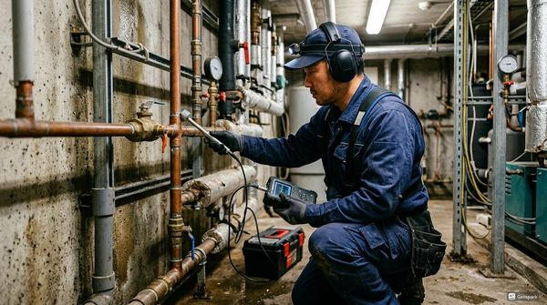
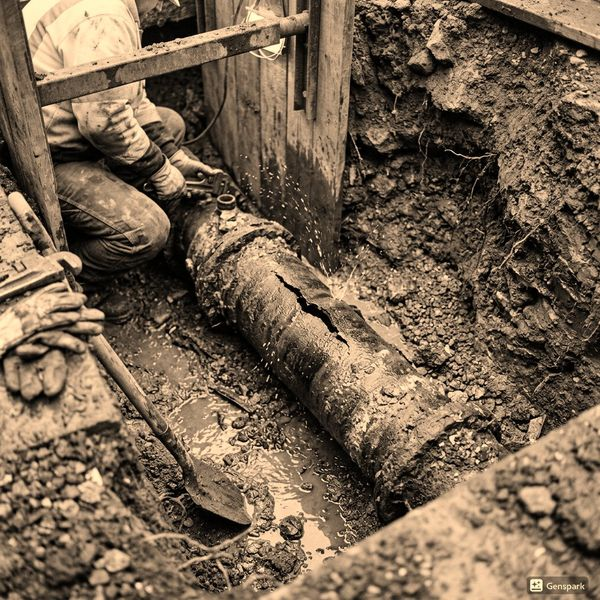

제우스시설관리 | 2025년 4월

매년 겨울, 영하 10도 이하로 기온이 내려가면 배관 동파 사고가 급증합니다. 동파는 배관이 얼면서 팽창하여 파열되는 것으로, 해동 후 대량의 물이 쏟아져 심각한 수해 피해를 일으킵니다.
❄️ 보일러실, 다용도실 등 난방이 되지 않는 공간의 배관
❄️ 외벽에 노출된 수도 계량기 및 배관
❄️ 옥상 물탱크 및 연결 배관
❄️ 장기간 비어있는 빈집의 배관
❄️ 지하 주차장 천장 노출 배관
1. 보온재 감싸기: 노출 배관에 보온재(스티로폼, 보온 테이프)를 감싸 단열합니다. 수도 계량기함에도 보온재를 넣어주세요.
2. 수도꼭지 약간 열기: 영하 10도 이하에서는 수도꼭지를 연필심 굵기로 틀어 물이 흐르게 합니다. 흐르는 물은 얼지 않습니다.
3. 난방 유지: 장기간 외출 시에도 보일러를 완전히 끄지 말고 '외출' 모드로 최소 온도를 유지합니다.
4. 빈집 관리: 장기간 비우는 집은 수도 밸브를 잠그고, 배관의 물을 빼두세요.
Step 1. 수도 밸브를 즉시 잠급니다. 해동되면 파열 부위에서 물이 쏟아집니다.
Step 2. 얼어붙은 부분에 따뜻한 수건을 감거나 헤어드라이기로 서서히 녹입니다. 절대로 뜨거운 물이나 직접 불을 사용하지 마세요. 급격한 온도 변화는 배관 파열을 악화시킵니다.
Step 3. 배관이 이미 파열되었다면 밸브를 잠근 상태로 전문 업체에 연락합니다.
제우스시설관리는 겨울철 동파 긴급 수리 서비스를 24시간 운영합니다. 배관 파열 수리, 누수 복구, 배관 교체까지 원스톱으로 처리합니다.
